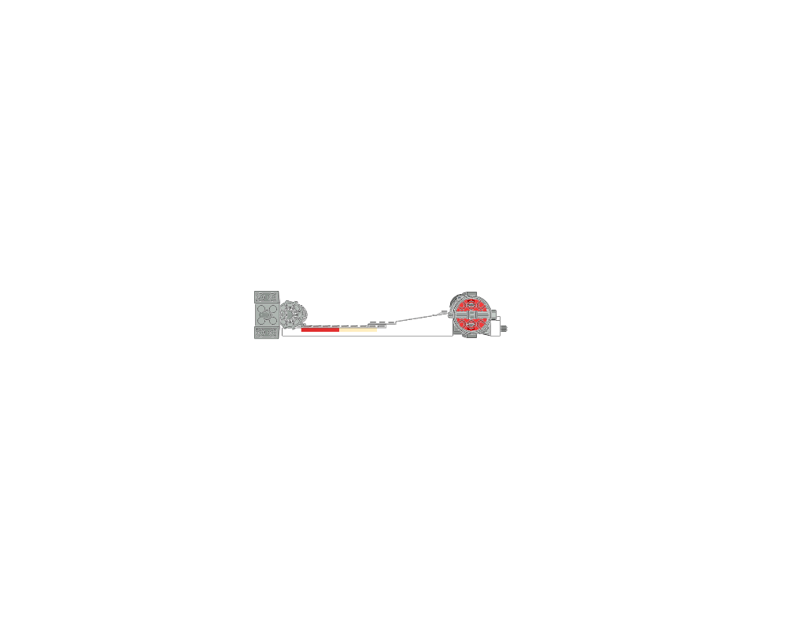
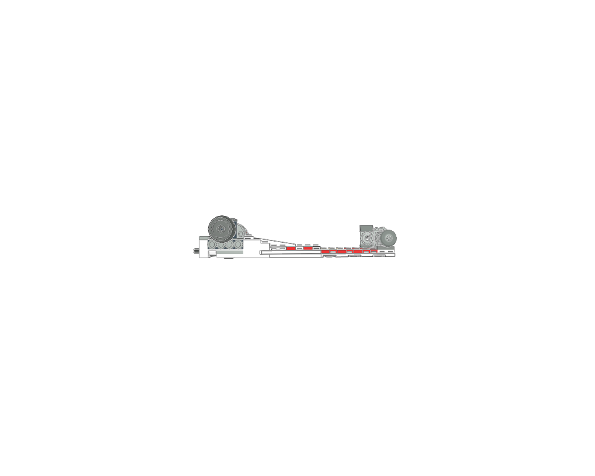
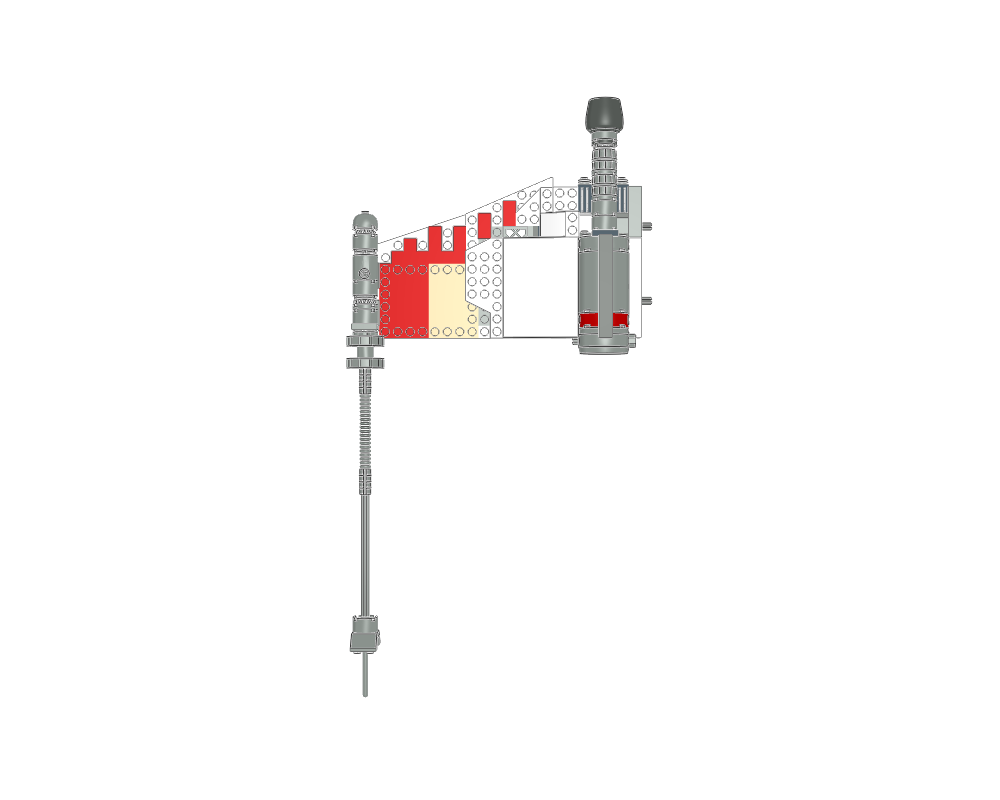

A long spacecraft wing can carry an engine pod and a slender tip feature while retaining a layered, readable silhouette.
construction
Read the plate sandwich, local bracing, nacelle and tip assembly as linked submodels. Whole-section views are supplied; prepare its source sections separately for build pages.
interfaces
Retain the source wing-root stack and inspect the exact mating parts before attaching it to a new spine.
parent context
7191-1.mpd supplies the other wings, central fuselage and wing articulation. This is one lower port wing, not a mirrored pair.
reuse notes
Use a real opposite-hand construction or rebuild it with matching left/right parts; never mirror physical part matrices. Keep the nacelle and long projecting details clear of neighbouring wings.
home

front

back

top
Sections to study separately
Use manual prepare on a selected source section to create its build pages.